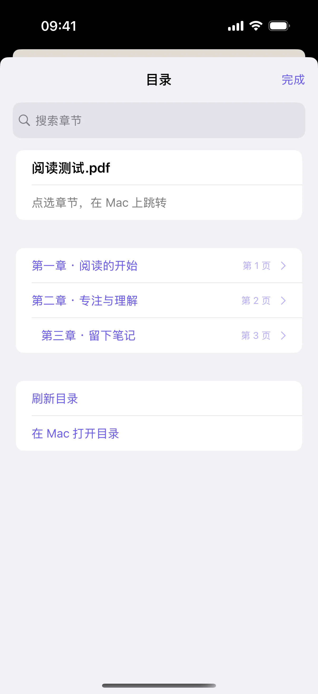
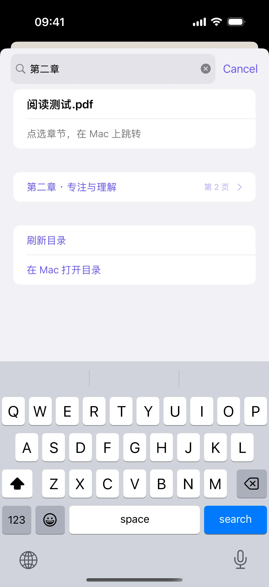
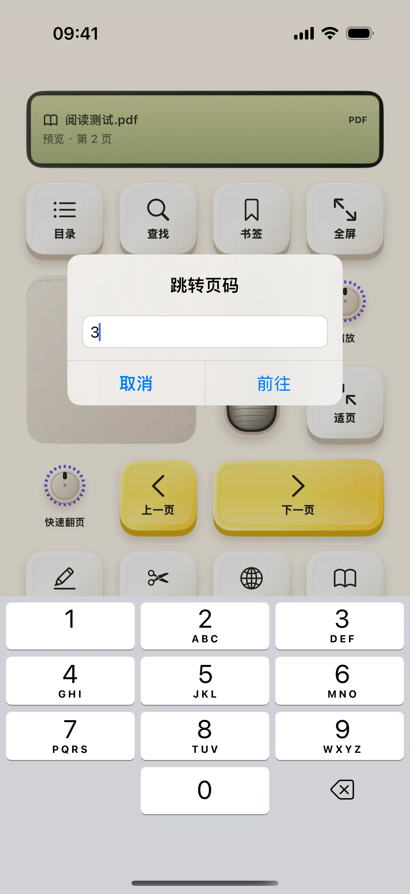

阅读布局控制的是 Mac 上已经打开的阅读窗口。下面用 PDF 练习翻页、找章节和输入页码；手机负责操作，正文仍在 Mac 阅读器里。
开始前准备
- iPhone / iPad 安装奶猫妙控 1.2.0，Mac 安装同版本配套端；完成配对，并允许 Mac 端的辅助功能权限。需要电脑画面时，再开启屏幕录制权限。
- 在 Mac“预览”中打开一份至少三页、带可搜索正文的 PDF。目录练习还需要文件本身包含书签目录；只有视觉排版出来的目录页并不一定能被读取成章节列表。
1. 打开阅读，检查当前文档
在 App 底部点“布局”，在列表中找到“阅读”。布局较多时用搜索框搜索名称；有多个桌面的方案先点右侧箭头展开，再点桌面名称；搜索具体桌面名称也能找到它。
先看手机显示的应用、文档名和位置是否与 Mac 一致。如果读到的是另一个窗口，先在 Mac 把目标 PDF 放到前台。截图中的第 2 页只是演示起点，你可以从自己的第一页开始。

2. 翻一页，再返回
点“下一页”，在 Mac 检查是否到了相邻页面；再点“上一页”回去。需要连续移动时可以使用翻页控制，但先通过单页操作确认焦点正确。
滚动和翻页不是同一动作：连续滚动模式下，要以阅读器实际显示的位置为准。不要把旋钮转动次数当作绝对页码。
3. 打开目录，确认章节来自文档
点“目录”，等待章节列表出现。先核对一项你在文档中知道的标题。若没有读到章节，检查 PDF 是否含书签目录，以及当前阅读器是否提供目录读取。
图中的三个章节是为操作核验准备的示例，不表示 App 能自动分析任意 PDF 并生成同样的目录。

4. 搜索章节，再点选
在目录的“搜索章节”框输入标题的一部分。图中输入“第二章”后只保留对应条目；你的文件应输入真实存在的章节词。
点结果后，目录页收起并返回阅读桌面。接着在 Mac 检查是否跳到该章节；手机弹窗收起只证明请求已发出，不能单独证明文档跳转成功。

5. 从更多菜单跳转页码
点阅读桌面的更多按钮，选择“跳转页码”。输入一个文件内存在的页码，例如 3，再点“前往”。在 Mac 检查页数与页面内容。
PDF 的文件页序号可能和正文印刷页码不同：封面、目录也占页面。先用已知的文件第 3 页练习，确认对应关系后再跳较远的位置。

6. 查找正文时，换用正文搜索
目录搜索只筛选章节名称。要找正文中的词，回到阅读桌面点查找入口，在“查找正文”弹窗输入文件中存在的词，再在 Mac 检查匹配结果。
扫描图片型 PDF 如果没有文本层，不能据此保证正文查找成功。需要把选中文字保存成资料时，再使用剪藏夹整理。
操作不符合预期时
没有目录，是 App 没连接吗？
不一定。文档可能没有可读取书签，或阅读器没有提供目录能力。先检查翻页与正文查找，再检查文档自身的目录。
手机为什么没有显示整本 PDF？
这个布局是 Mac 阅读器的控制界面。它读取可用状态并发送操作，不会自动把整本书导入手机。
换成 EPUB 后按钮不一样？
按钮根据阅读类型与软件能力变化。图书里的主题、章节、书签等操作不能直接套用 PDF 的页码流程。
本文按奶猫妙控 1.2.0 的界面与操作编写，更新于 2026 年 9 月 10 日。查看更新日志 · 连接与权限帮助。